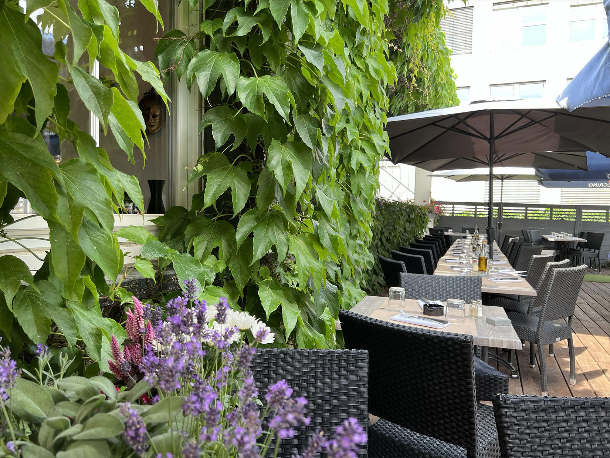
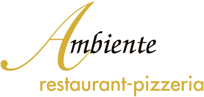
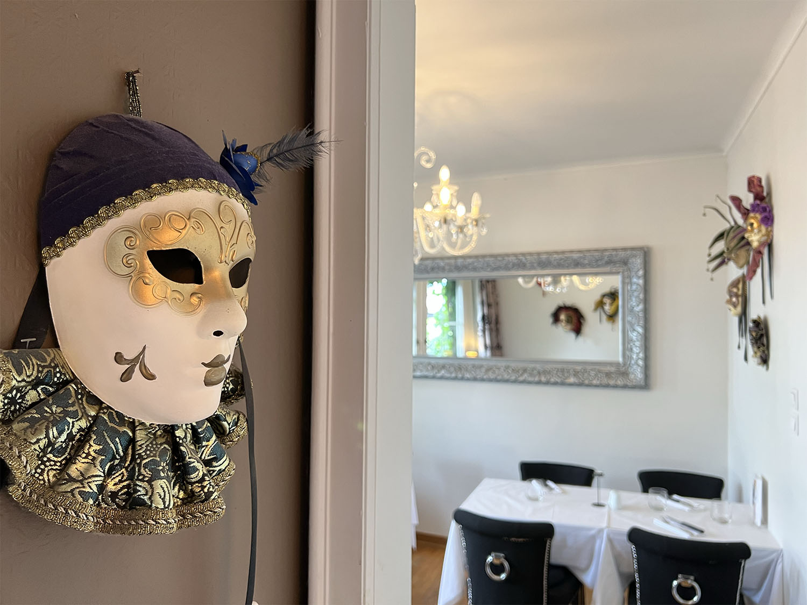
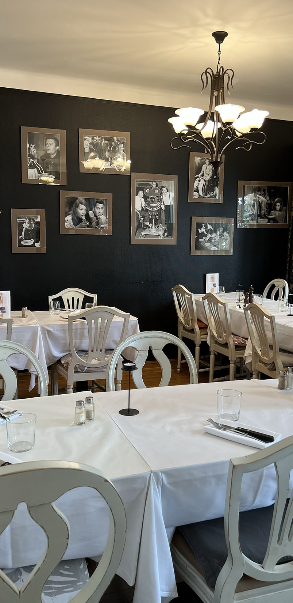
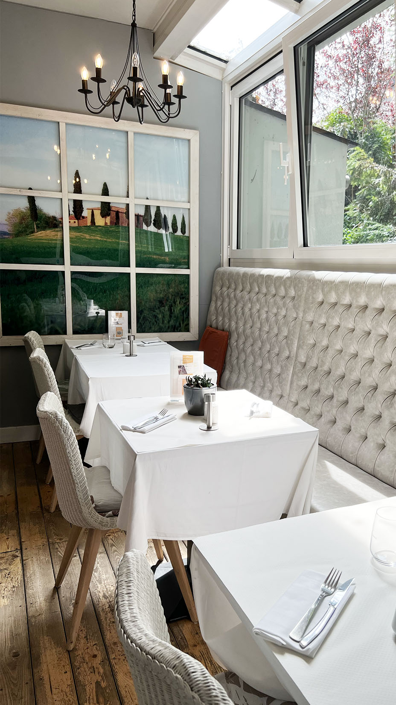
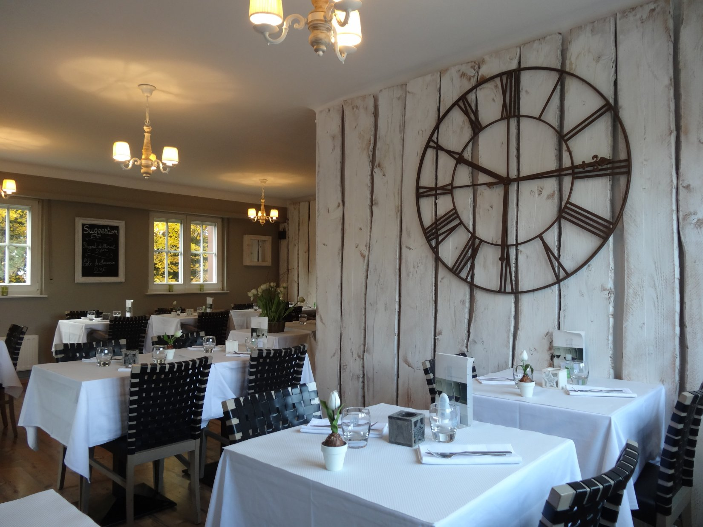
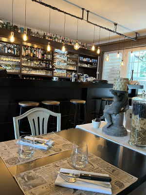

Escale 00 · La Terrasse
Envie d'un bon plat généreux dans un cadre chaleureux ?
Une cucina italiana généreuse au coin de Belair — pizza maison, pâtes fraîches et grillades, servies dans une collection de salles qui font le tour de l'Italie.
Départs du jour — la carte
Plats et prix indicatifs — carte complète à confirmer avec l'établissement.
prix à confirmer
prix à confirmer
prix à confirmer
prix à confirmer
prix à confirmer
Berg-Burger de la Casa
Le burger maison, régulièrement cité comme l'un des favoris des habitués.
à partir de … · à confirmerFilet de dorade
Dorade grillée, décrite par les clients comme la vraie vedette de la carte grill.
à partir de … · à confirmerPizza maison
La catégorie signature — pâte préparée maison et cuisson soignée.
à partir de … · à confirmerUn tour d'Italie, salle par salle
Chaque salle a son décor et son ambiance — choisissez votre escale à la réservation.

Veneto
Cinecittà
Toscana
Rustico
BarAutres salles : Roma, Alto-Adige (à l'étage, groupes ~20). Photos supplémentaires à fournir par l'établissement.
Horaires, accès & réservation
Tous les horaires sont à confirmer avec l'établissement.
285, Route d'Arlon · L-1150 Luxembourg
+352 26 38 97 67 ambiente@groupeaura.lu Instagram · @restaurant_.ambiente